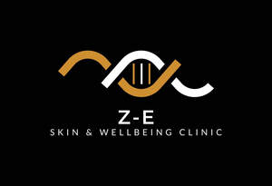

Trade Mark Journal No.2025/020 16 May 2025
UK00004196534 29 April 2025 (3,5,35,44)

- Class 3
- Cosmetics; Skincare cosmetics; Cosmetics and cosmetic preparations; Hair cosmetics; Skin fresheners [cosmetics]; Cosmetics for eye-lashes; Cosmetics for suntanning; Anti-aging moisturizers used as cosmetics; Organic cosmetics; Lip cosmetics; Nail cosmetics; Skin moisturizers used as cosmetics; Non-medicated cosmetics; Natural cosmetics; Mousses [cosmetics]; Cosmetics preparations; Make-up palettes containing cosmetics; Tanning gels [cosmetics]; Cosmetics in the form of lotions; Tanning oils [cosmetics]; Colour cosmetics; Beauty care cosmetics; Facial creams [cosmetics]; Suncare lotions [for cosmetic use]; Self-tanning preparations [cosmetics]; Cosmetics for animals; Eyebrow cosmetics; Tanning preparations [cosmetics]; Decorative cosmetics; Multifunctional cosmetics; Milks [cosmetics]; Eye cosmetics; Body creams [cosmetics]; After-sun oils [cosmetics]; Cosmetics for eye-brows; Skin masks [cosmetics]; Tanning milks [cosmetics]; Functional cosmetics; Facial gels [cosmetics]; Suntan oils [cosmetics]; Skin care cosmetics; Fluid creams [cosmetics]; Cosmetics for children; Suntan lotion [cosmetics]; Non-medicated cosmetics and toiletry preparations; Cosmetics in the form of creams; Powder compacts [cosmetics]; Sun-tanning preparations [cosmetics]; Cosmetic hair lotions; Suntanning oil [cosmetics]; After-sun milks [cosmetics]; Colour cosmetics for the skin; After-sun milk [cosmetics]; Cosmetics for use on the skin; Cosmetic moisturisers; Sunscreens [for cosmetic use]; Cosmetic creams and lotions; Skin recovery creams [cosmetics]; Night creams [cosmetics]; Body gels [cosmetics]; Sun blocking lipsticks [cosmetics]; Cosmetics for the use on the hair; Cosmetic products in the form of aerosols for skincare; Body and facial creams [cosmetics]; Sunscreen [for cosmetic use]; Body care cosmetics; Creams (Cosmetic -); Cosmetic creams; Sunscreen creams [for cosmetic use]; Cosmetic soaps; Cosmetics containing keratin; Cosmetics in the form of powders; Hair care lotions [for cosmetic use]; Cosmetic skin fresheners; Dyes (Cosmetic -); Cosmetic dyes; After-sun lotions [for cosmetic use]; Cosmetics containing panthenol; Beauty lotions; Cosmetic facial lotions; Facial lotions [cosmetic]; Cosmetics in the form of oils; Cosmetic suntan lotions; Nail paint [cosmetics]; Colour cosmetics for children; Skin care lotions [cosmetic]; Perfume oils for the manufacture of cosmetic preparations; Nail hardeners [cosmetics]; Tissues impregnated with cosmetics; Nail tips [cosmetics]; Anti-aging creams [for cosmetic use]; Sun protecting creams [cosmetics]; Cosmetic products for the shower; Nail primer [cosmetics]; Smoothing emulsions [cosmetics]; Anti-ageing creams [for cosmetic use]; Skin cleansers [cosmetic]; Perfumed powders [for cosmetic use]; Liners [cosmetics] for the eyes; Moisturising skin lotions [cosmetic]; Cosmetic creams for the skin; Skin creams [cosmetic]; Skin creams [for cosmetic use]; Body and facial gels [cosmetics]; Anti-wrinkle creams; Anti-aging creams; Anti-ageing creams; Moisturizing creams; Hair care creams [for cosmetic use]; Beauty creams; Beauty balm creams; Beauty serums; Beauty masks; Masks (Beauty -); Beauty soap; Beauty milk; Beauty gels; Beauty milks; Beauty creams for body care; Facial beauty masks; Beauty preparations for the hair; Beauty care preparations; Distilled oils for beauty care; Beauty tonics for application to the face; Beauty masks for hands; Beauty tonics for application to the body; Beauty serums with anti-ageing properties; Body cleaning and beauty care preparations; Non-medicated beauty preparations; Natural makeup; Natural perfumery; Colour cosmetics for the eyes; Natural oils for cosmetic purposes; Facial makeup; Cosmetic products in the form of aerosols for skin care.
- Class 5
- Pharmaceutical creams; Moisturising creams [pharmaceutical]; Acne creams [pharmaceutical preparations]; Medicated skin creams; Creams for dermatological use; Herbal creams for medical use; Body creams for pharmaceutical use.
- Class 35
- Marketing research in the fields of cosmetics, perfumery and beauty products.
- Class 44
- Beauty salons; Salons (Beauty -); Beauty care; Beauty treatment; Salon services (Beauty -); Beauty consultation; Beauty spa services; Beauty consultancy; Hygienic and beauty care; Services of a hair and beauty salon; Beauty care of feet; Human hygiene and beauty care; Beauty care services; Beauty therapy services; Beauty treatment services; Facial beauty treatment services; Hygienic and beauty care for humans; Hygienic and beauty care services; Beauty salons for wig cutting; Beauty therapy treatments; Beauty care for human beings; Beauty treatment services especially for eyelashes; Hygienic and beauty care for human beings; Beauty information services; Consultancy in the field of body and beauty care; Beauty advisory services; Beauty consultancy services; Rental of equipment for human hygiene and beauty care; Beauty care services provided by a health spa; Provision of hygienic and beauty care services; Information relating to beauty care; Information relating to beauty; Advisory services relating to beauty care; Consultation services relating to beauty care; Advisory services relating to beauty; Consultancy services relating to beauty; Providing information relating to beauty salon services; Advisory services relating to beauty treatment; Providing information about beauty; Consultancy provided via the Internet in the field of body and beauty care; Rental of machines and apparatus for use in beauty salons or barbers' shops; Cosmetic make-up services; Skin care salons; Hair salon services for women; Skin care salon services; Cosmetic treatment services for the body, face and hair.
Z-ESTHETICS SKIN CLINIC & WELLBEING LTD